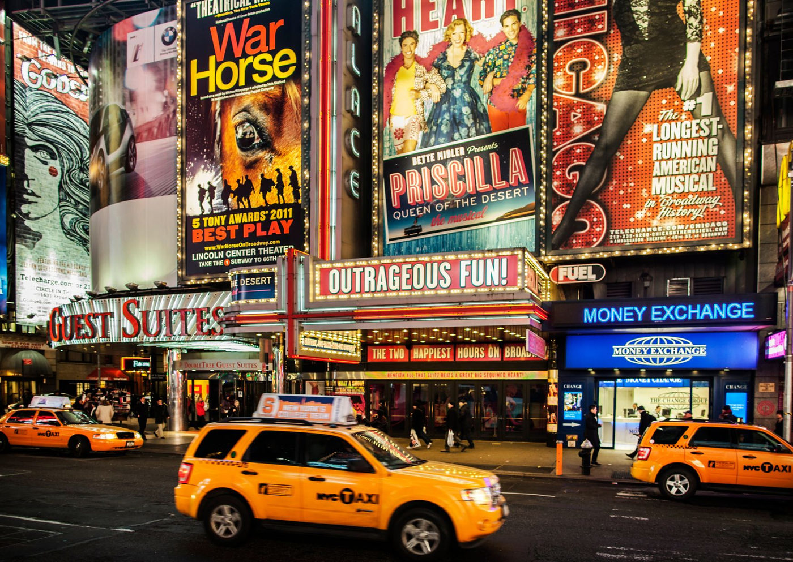

Brasil: terceiro produtor de teatro musical no mundo. Verdadeiro ou falso?

De cara adianto que não tenho a resposta. O que sei é que este é um pensamento recorrente, quase frase-feita, clichê. Pode ser encontrado em qualquer texto jornalístico (impresso ou eletrônico) que fale sobre os avanços do teatro musical no País nos últimos 25 anos: “o Brasil hoje é terceiro maior produtor de teatro musical no mundo, perdendo apenas para os Estados Unidos e a Inglaterra”. Outros ainda dizem: “perdendo apenas para a Broadway e o West-End londrino”. E eu pergunto: o que há de verdadeiro nisso?
Todo mundo fala (ou falava até bem pouco tempo) a mesma coisa: atores, produtores, maestros, diretores e, claro, jornalistas. A frase normalmente é repetida como um mantra, mas sempre sem aspas. Ou seja: não se sabe quem foi que disse isso; de onde veio a informação. E também ninguém a comprova com números ou dados. Especialmente porque, no Brasil, é muito difícil se ter acesso a informações precisas de quem produziu o patrocinou o quê, qual foi o público real, quantos ingressos foram destinados a contrapartidas que nunca foram resgatadas, etc etc.
Portanto, sobre ela – a tal frase – pairam muitas dúvidas: como se mede esse tamanho ou grandeza? em número de produções (mainstream ou não)? se é comparativamente com Broadway e West-End (e por decorrência com outros centros produtores) ou em termos de países? levando em conta números de bilheteria, empregos gerados, tempo em cartaz, patrocínios, prêmios? É muita pergunta pra pouca resposta.
Ao que parece, quando se fala que o Brasil só perde para a Broadway ou West-End, se compara um país inteiro com dois centros produtores e, com isso, automaticamente ignorando a off-Broadway ou o que se faz de teatro em Chicago ou Los Angeles (Estados Unidos), bem como a produção teatral de Stratford na Inglaterra, por exemplo. É como comparar alhos com bugalhos.
Após uma pesquisa pulando de site em site, de declaração em declaração, é possível notar que a frase teria sido cunhada numa matéria jornalística sobre patrocínios em teatro musical publicada pelo jornal Meio e Mensagem, em sua versão eletrônica da edição de março de 2012. A matéria, da jornalista Lena Castellon – muito baseada em press-releases da então recém-lançada Geo Eventos, da Aventura Entretenimento e da T4F –, afirmava que 2012 prometia ser melhor do que o ano anterior, quando o setor crescera “bastante a ponto de se tornar o terceiro do mundo em número de títulos, atrás dos Estados Unidos e da Inglaterra.” O que parece plausível.
Mas a história não acaba aí. O mesmo veículo, em uma extensa matéria sobre entretenimento e patrocínios intitulada Holofotes Sobre o Brasil (outubro, 2012), traz novamente à tona o mesmo pensamento. A frase, entretanto, é um pouco diferente, mais cautelosa e igualmente inconsistente. A jornalista Renata Batochio, lá pelas tantas do texto, baseada em sei lá o quê, afirma que no futuro o Brasil teria “tudo para ser a terceira maior capital mundial do entretenimento, ao lado de Londres e Nova Iorque”.
Ora, há que se considerar que teatro musical, apesar de ser entretenimento, não é a única forma do gênero. É preciso que se incluam nisso atividades outras, como dança, circo, música, grandes shows e eventos esportivos, megaexposições e outras tantas manifestações. Além disso, em 2012 a jornalista de certo modo profetizava que “o Brasil tem (ou tinha) tudo para ser” - o que, de forma alguma, signifique ser.
Estávamos às portas da Copa do Mundo (2014) e das Olimpíadas (2016). Claro que isso engrossou o caldo em termos ufanismo e de eventos culturais e de entretenimento. No entanto, faltavam – como ainda faltam – dados, números, relatórios, pesquisas confiáveis e estendidas por todo o Brasil (envolvendo cidades para além do eixo RJ-SP. Também não imaginávamos o imenso retrocesso quase avassalador que nosso setor cultural sofreria com a pandemia e os anos em que o fascismo esteve no poder deste país.
Atualmente precisamos nos organizar como setor da economia – sem essa balela de ‘economia criativa’, mas como setor produtivo real, que gera empregos diretos e indiretos. E, isso, contabilizado de forma transparente e com critérios claros, sem deixar nossa importância em comparação com outras capitais do mundo. Assim – e só assim – poderemos repetir o mantra de sermos quem somos e, portanto, nos ufanarmos de nosso teatro musical ser o terceiro no mundo. Por ora, apenas digamos que vamos bem, mas poderíamos ir melhor!